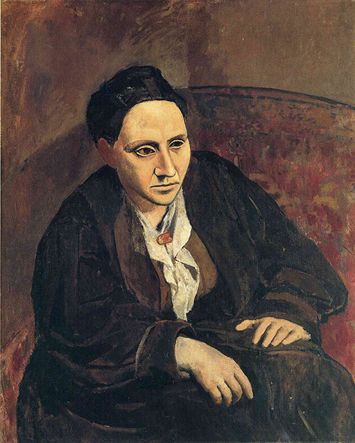

The Actor
Pablo Picasso
Picasso painted The Actor over another painting, because he could not afford new canvases at the time. He created the painting over the winter of 1904–1905, at the age of 23. This was during the artist's Rose Period, when he changed his painting style from the downbeat tones of his Blue Period to warmer and more romantic hues. The painting currently resides in the Metropolitan Museum of Art in New York City. It was donated to the museum in 1952 by automobile heiress Thelma Chrysler Foy, daughter of Walter Chrysler, the founder of the Chrysler automobile company. Experts estimate that the painting, which is considered to be one of the biggest from Picasso's Rose Period, is worth more than US$100 million.

Family of Saltimbanques
Pablo Picasso
Family of Saltimbanques (La famille de saltimbanques) is a 1905 painting by Pablo Picasso. It is considered the masterpiece of Picasso's circus period. The painting depicts six saltimbanques, a kind of itinerant circus performer, in a desolate landscape. The composition groups them together, but they do not seem connected to each other and are not looking at each other.[

Portrait of Gertrude Stein
Pablo Picasso
By 1905 Picasso became a favorite of the American art collectors Leo and Gertrude Stein. Their older brother Michael Stein and his wife Sarah also became collectors of his work. Picasso painted portraits of both Gertrude Stein and her nephew Allan Stein. Gertrude Stein became Picasso's principal patron, acquiring his drawings and paintings and exhibiting them in her informal Salon at her home in Paris. At one of her gatherings in 1905, he met Henri Matisse, who was to become a lifelong friend and rival. The Steins introduced him to Claribel Cone and her sister Etta who were American art collectors; they also began to acquire Picasso and Matisse's paintings. Eventually Leo Stein moved to Italy, and Michael and Sarah Stein became patrons of Matisse; while Gertrude Stein continued to collect Picasso.

Woman and Child on the Seashore
Pablo Picasso
Inspired by ancient art he saw while in Rome, Picasso began painting heavy-set figures in a neoclassical mode. In 1918, having married the Russian dancer Olga Koklova, Picasso was drawn to images of mothers with children.

Burial at Ornans
Gustave Courbet
The Burial, one of Courbet's most important works, records the funeral of his grandfather which he attended in September 1848. People who attended the funeral were the models for the painting. Previously, models had been used as actors in historical narratives, but in Burial Courbet said he "painted the very people who had been present at the interment, all the townspeople". The result is a realistic presentation of them, and of life in Ornans.

Where Do We Come From? What Are We? Where Are We Going?
Paul Gauguin
This is Paul Gaugin’s most famous painting, and he considered it his masterpiece, and the culmination of his thoughts. In Tahiti, as he was painting his masterpiece, Gaugin declared that he would commit suicide upon its completion. Although this was something he had previously attempted, this was not the case, as the artist died of syphilis in 1903. The painting was meant to be read from right to left, with the three main figures in the painting representing the three questions of the title. The figures are arranged from the beginning stages of life, from young figures with a child, to the middle aged figure in the middle, to the elder figure on the left of the painting. The idol in the background, situated behind the elder figure, represents the “Beyond.”

Starry Night
Vincent Van Gogh
In the later part of his life, Van Gogh committed himself to an asylum in Saint Remy de Provence. The Starry Night was the view from the window in Van Gogh’s sanitarium bedroom. Although it is a night scene, it was painted during the day. The painting is often referred to as Van Gogh’s magnus opus. As he often sent his works to his brother Theo for his approval, he mailed this one to him in late 1889. He also wrote that he was not so happy about the work, which did not seem complete, as he had originally intended it to simply be a study of the night sky.